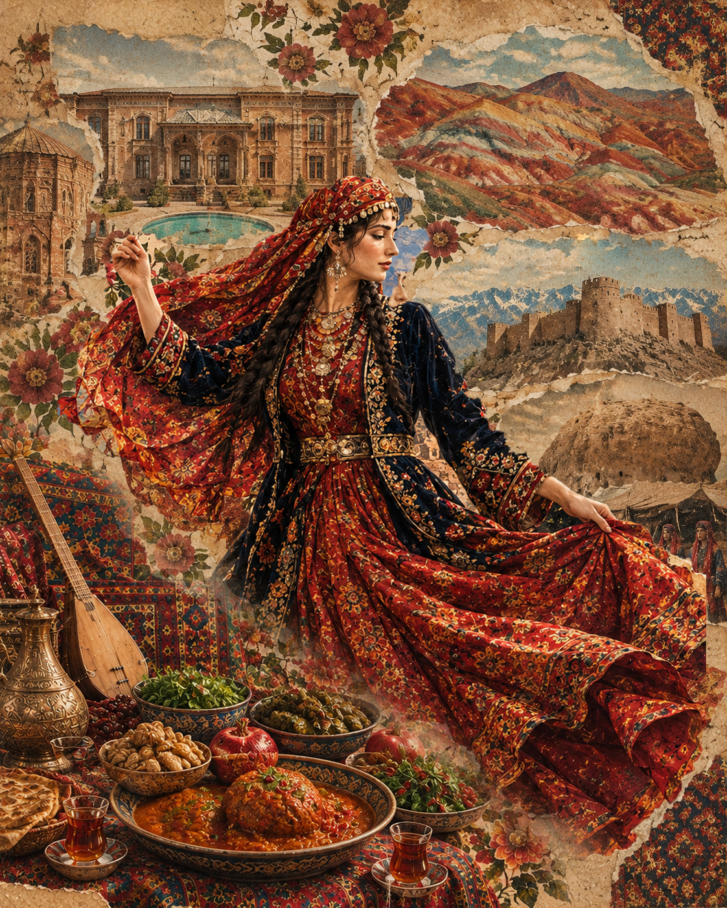
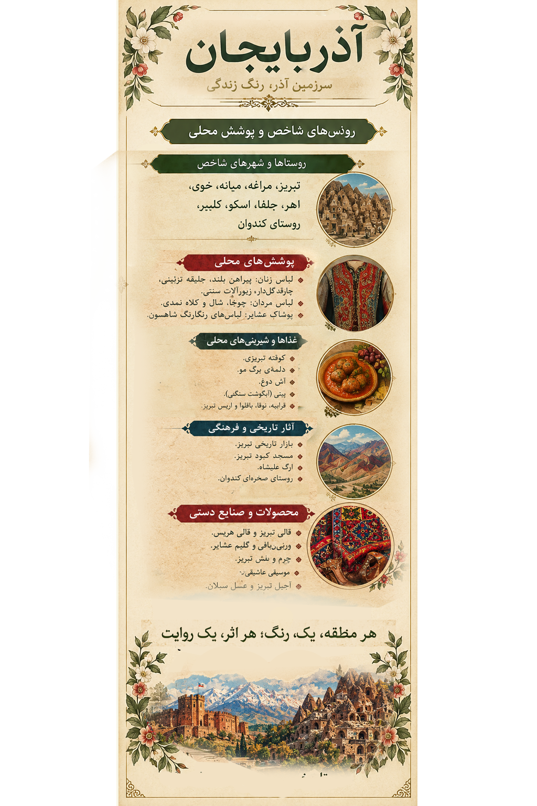

۱. تصویر آذربایجان؛ روایت یک سرزمین
1. Azerbaijan in Art: A Land's Story
در این اثر، پوشش رنگارنگ زنان، معماری تاریخی، کوههای رنگی آلاداغلار، قلعه بابک، ساز عاشیقی، قالی و ورنیبافی و خوراکهای محلی در کنار هم قرار گرفتهاند. هر عنصر، پنجرهای به فرهنگ و خاطره مردم آذربایجان شرقی و غربی است.
This artwork brings together women's colorful clothing, historic architecture, the painted mountains of Aladaghlar, Babak Castle, the Ashiq instrument, carpets and verni weaving, and local foods. Each element opens a window into the culture and memories of East and West Azerbaijan.

اثر تصویری آذربایجان از مجموعه «ایران، هزار رنگ»
The Azerbaijan artwork from “Iran, A Thousand Colors”
از نقش پارچههای رنگین تا نوای ساز عاشیق؛ هر گوشه آذربایجان داستانی برای گفتن دارد.
From colorful textiles to the melodies of the Ashiq instrument, every corner of Azerbaijan has a story to tell.
این تصویر، اثر هنری مجموعه است. توضیحات این صفحه برای معرفی فرهنگی و تاریخی آذربایجان شرقی و غربی ارائه شدهاند.
This is the artwork created for the collection. The descriptions on this page introduce the culture and history of East and West Azerbaijan.
۲. پوشش زنان آذربایجان؛ رنگ، وقار و هنر دست
2. Women's Dress in Azerbaijan: Color, Grace and Craft
پوشاک سنتی زنان آذربایجان یک لباس یکسان برای همه منطقه نیست. نوع پوشش با توجه به محل زندگی، زبان، شیوه معیشت و سنتهای محلی تفاوت داشته است. در آذربایجان شرقی، پوشش زنان شاهسون و قرهداغی با پیراهنهای بلند، دامنهای چیندار و چارقدهای رنگارنگ شناخته میشود. در آذربایجان غربی نیز پوشش زنان ترکزبان و کردزبان ویژگیهای متفاوتی دارد.
Traditional women's clothing in Azerbaijan is not a single uniform style. Dress varies according to location, language, lifestyle, and local customs. In East Azerbaijan, Shahsevan and Qaradagh women's clothing is known for long dresses, layered skirts, and colorful headscarves. In West Azerbaijan, Turkish-speaking and Kurdish-speaking communities have distinct clothing traditions.

لیبل اختصاصی آذربایجان؛ راهنمای تصویری پوشش، جاذبهها و فرهنگ محلی
Azerbaijan's exhibition label: a visual guide to clothing, landmarks, and local culture
پیراهن و تومان
Long Dress and Tuman
«کوینک» یا پیراهن بلند از اجزای اصلی پوشش زنان در بسیاری از نواحی آذربایجان بوده است. «تومان» به دامن بلند و معمولاً چیندار گفته میشود که در برخی پوششها بهصورت چندلایه روی هم قرار میگرفت. «شلته» یا «دیزلیک» نیز نام دامن کوتاهتری است که در بعضی ترکیبهای لباس دیده میشود.
“Koynek” refers to a long dress worn in many parts of Azerbaijan. “Tuman” is a long, often pleated skirt, sometimes worn in several layers. “Shelte” or “Dizlik” refers to a shorter skirt used in some traditional outfits.
جلیقه و بالاپوش
Vests and Outer Garments
جلیقههای تزئینشده و بالاپوشهایی مانند «یِل» روی پیراهن پوشیده میشدند. در برخی نمونهها از مخمل، ترمه و پارچههای نفیس استفاده میشد و لبه لباس با نوارهای رنگی، دوختهای تزئینی و نقشهای ظریف آراسته میشد.
Decorated vests and outer garments such as “Yel” were worn over the dress. Some examples used velvet, termeh, and fine fabrics, embellished with colorful trims and delicate decorative stitching.
چارقد، سربند و عرقچین
Headscarves and Caps
چارقدهای بزرگ و گلدار، روسریهای رنگی و سربندها از عناصر چشمگیر پوشش زنان بودند. عرقچین نیز بهعنوان سرپوشی کوچک زیر روسری یا چارقد استفاده میشد. شیوه بستن و جنس پارچه در مناطق مختلف تفاوت داشت.
Large floral headscarves, colorful scarves, and headbands were distinctive elements of women's dress. The small cap known as “Araqchin” could be worn beneath a scarf. Tying styles and fabrics varied by region.
پوشش زنان شاهسون و ارسباران
Shahsevan and Arasbaran Women's Dress
در پوشش سنتی زنان عشایر شاهسون و برخی نواحی ارسباران، پیراهن بلند، دامنهای پرچین و چندلایه، بالاپوش کوتاه و چارقد بزرگ دیده میشود. پارچههای روشن و گلدار و تزئینات رنگی از ویژگیهای نمونههای شناختهشده این پوششاند.
Traditional Shahsevan and some Arasbaran women's outfits include long dresses, full layered skirts, short outer garments, and large headscarves. Bright floral fabrics and colorful decorations are characteristic of documented examples.
پوشش زنان ترکزبان آذربایجان غربی
Turkish-speaking Women's Dress in West Azerbaijan
در برخی نواحی ترکزبان آذربایجان غربی، پیراهنهای رنگارنگ، جلیقه، شلوار و سربندهای محلی در کنار هم دیده میشوند. نام و شکل اجزای لباس ممکن است از یک منطقه به منطقه دیگر متفاوت باشد.
In some Turkish-speaking areas of West Azerbaijan, colorful dresses, vests, trousers, and local head coverings are worn together. Names and styles can vary from one locality to another.
پوشش زنان کرد آذربایجان غربی
Kurdish Women's Dress in West Azerbaijan
در مناطق کردنشین مانند مهاباد و بوکان، پیراهن بلند و چیندار «کِراس»، شلوار گشاد «دَرپه»، جلیقه و سربند از اجزای شناختهشده پوشش زنان هستند. رنگهای شاد، پارچههای لطیف و تزئینات ظریف بهویژه در لباسهای جشن و عروسی جلوه دارند.
In Kurdish areas such as Mahabad and Bukan, the long pleated “Keras” dress, loose “Darpe” trousers, vests, and headscarves are recognized elements of women's clothing. Bright colors, delicate fabrics, and fine embellishments are especially visible in festive and wedding outfits.
نامها و شکل لباسها در دورهها و نواحی مختلف یکسان نبودهاند. این معرفی، نمونههای شناختهشده پوشاک منطقه را کنار هم قرار میدهد و به معنی یکسانبودن لباس همه زنان آذربایجان نیست.
Garment names and styles have varied across periods and localities. This section presents documented examples and does not suggest that all women in Azerbaijan wore the same clothing.
۶. تاریخ، معماری و طبیعت
6. History, Architecture and Nature
بازار تاریخی تبریز
Historic Bazaar of Tabriz
بازار تاریخی تبریز یکی از بزرگترین مجموعههای سرپوشیده بازار در جهان و از آثار ثبتشده در فهرست میراث جهانی یونسکو است. تیمچهها، سراها، راستهها و گنبدهای آجری آن، روایتگر تاریخ تجارت و زندگی شهری در آذربایجاناند.
The Historic Bazaar of Tabriz is one of the world's largest covered bazaar complexes and a UNESCO World Heritage Site. Its courtyards, caravanserais, passageways, and brick domes tell the story of trade and urban life in Azerbaijan.
مسجد کبود و ارگ علیشاه
Blue Mosque and Arg-e Alishah
مسجد کبود تبریز با کاشیکاریهای فیروزهای و لاجوردی و ارگ علیشاه با بقایای عظیم آجری، از نشانههای مهم معماری تاریخی این شهر هستند.
Tabriz's Blue Mosque is celebrated for its turquoise and lapis tilework, while the monumental brick remains of Arg-e Alishah are another landmark of the city's historic architecture.
قلعه بابک؛ دژ کوهستانی کلیبر
Babak Castle: The Mountain Fortress of Kaleybar
قلعه بابک بر فراز ارتفاعات منطقه کلیبر و در میان چشماندازهای کوهستانی ارسباران قرار دارد. مسیر دسترسی دشوار و موقعیت بلند آن، این دژ را به یکی از نمادهای تاریخی و گردشگری آذربایجان شرقی تبدیل کرده است.
Babak Castle stands high above the Kaleybar region amid the mountain scenery of Arasbaran. Its challenging approach and elevated position have made it one of East Azerbaijan's iconic historic attractions.
آلاداغلار؛ کوههای رنگارنگ
Aladaghlar: The Colorful Mountains
کوههای رنگی آلاداغلار با لایههای سرخ، نارنجی، زرد و سفید، چشماندازی متفاوت در شمالغرب ایران پدید آوردهاند. رنگهای متنوع این کوهها حاصل ترکیب مواد معدنی و ساختار زمینشناختی آنهاست.
The colorful Aladaghlar mountains create a striking landscape in northwestern Iran, with layers of red, orange, yellow, and white shaped by their mineral composition and geological structure.
ارسباران و دریاچه ارومیه
Arasbaran and Lake Urmia
جنگلها و زیستبوم کوهستانی ارسباران در آذربایجان شرقی از مناطق ارزشمند طبیعی ایراناند. دریاچه ارومیه نیز از مهمترین پهنههای آبی داخلی کشور است و اهمیت زیستمحیطی فراوانی دارد.
The forests and mountain ecosystem of Arasbaran in East Azerbaijan are among Iran's valuable natural areas. Lake Urmia is one of the country's most important inland water bodies and has great environmental significance.
در پوستر مجموعه، بنای بالای سمت چپ بهعنوان «عمارت تاریخی» نمایش داده شده است؛ تا زمان شناسایی قطعی تصویر مرجع، نام مشخصی به آن نسبت داده نمیشود.
The building in the upper-left part of the artwork is described as a “historic mansion.” No specific name is assigned until its reference image is identified with certainty.